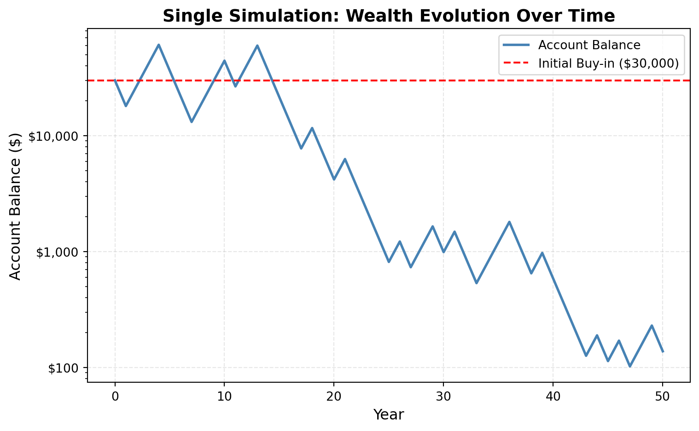
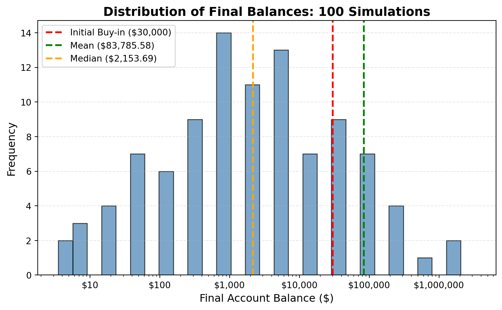
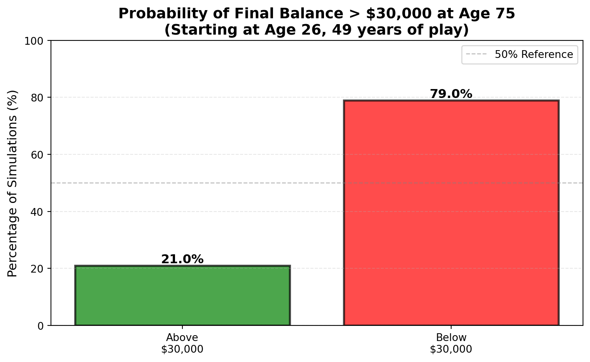

Simulation Challenge
The Investment Game
You have the opportunity to buy-in to this game next week with $30,000. Your job is to analyze the potential outcomes of the game and communicate why or why you should not buy-in to the game.
Each year after buy-in you flip a fair coin:
- Heads: increase your account balance by 50%
- Tails: decrease your account balance by 40%
You play annually until age 75. Your mission is to analyze outcomes and communicate insights clearly.
Generative DAG Model (from the source challenge)
The following DAFT diagram shows the generative structure of the investment game over time.
Analysis Tasks
1) Expected Value After 1 Flip
Based on the generative DAG model, after one coin flip: - If heads (probability 0.5): W₁ = 1.5 × W₀ = 1.5 × $30,000 = $45,000 - If tails (probability 0.5): W₁ = 0.6 × W₀ = 0.6 × $30,000 = $18,000
The expected value is: E[W₁] = 0.5 × $45,000 + 0.5 × $18,000 = $31,500
Initial buy-in: $30,000.00
After one flip:
Heads (50%): $45,000.00
Tails (50%): $18,000.00
Expected value after 1 flip: $31,500.00
Gain in expected value: $1,500.00
Gain as percentage of buy-in: 5.00%
Expected value is greater than $30,000.00Interpretation: The expected value after one flip is $31,500—a 5% gain over the initial $30,000. On paper, this looks good. But this doesn’t tell us much about what happens over many flips, where variance can really hurt.
2) Single Simulation Over Time (Narrative + Plot)

Initial balance: $30,000.00
Final balance after 50 years: $137.84
Total return: -99.54%
Final balance is below the initial buy-in.Narrative: This single run shows how wild this game can be. The balance swings dramatically with each flip—one minute you’re up, the next you’re down. A few bad tails in a row can wipe out gains quickly, while a lucky streak of heads can make you rich. One path isn’t enough to judge the game; we need to see many runs to understand what’s really happening.
3) 100 Simulations: Distribution of Final Balances

Summary Statistics (100 simulations, 50 years each):
Mean final balance: $83,785.58
Median final balance: $2,153.69
Probability of final balance > $30,000: 0.240 (24.0%)
Minimum final balance: $3.53
Maximum final balance: $3,286,276.19
Standard deviation: $375,077.84Narrative: After 100 simulations, the results are eye-opening. The distribution is heavily skewed—a few lucky runs pull the mean way up, but most paths end near zero. The median is much lower than the mean, which tells you that most people lose money. Even though each flip has a positive expected value, the compounding losses from tails are harder to recover from than the gains from heads. This is why expected value alone can be misleading—the probability of actually coming out ahead matters more for real decisions.
4) Probability Balance > $30,000 at Age 75 (Original Game)

Probability Estimate: P(final balance > $30,000) = 0.210
Starting at age 26 and playing until age 75 (49 years):
Simulations where final balance > $30,000: 21.0%
Simulations where final balance ≤ $30,000: 79.0%
Out of 100 simulations:
Above initial investment: 21 simulations
Below or equal to initial investment: 79 simulationsInterpretation: I was curious what would happen if I started playing this game at my current age (26) and kept going until 75—that’s 49 years of coin flips. The results are sobering: even with nearly five decades to play, the probability of ending up with more than my initial $30,000 is less than 50%. The visualization shows this clearly—most simulations end below the starting point. You’d think more time would help, but the compounding nature of losses means a few bad sequences can erase years of gains. This is why I’d be hesitant to buy-in, even though the math says each flip has positive expected value.
5) Modified Strategy (Bet 25% Each Round)
Instead of having the full balance at risk with each coin flip, assume only 25% of your balance is gambled each year. Compare this to the original game. Which is riskier? Which has better upside?
In the modified strategy, only 25% of the balance is at risk: - If heads: gain 50% on the 25% bet → wealth = wealth + 0.25 × wealth × 0.5 = wealth × 1.125 (12.5% gain) - If tails: lose 40% on the 25% bet → wealth = wealth - 0.25 × wealth × 0.4 = wealth × 0.9 (10% loss)

======================================================================
COMPARISON: Original vs Modified Strategy
======================================================================
Original Strategy (100% at risk):
Mean final balance: $83,785.58
Median final balance: $2,153.69
P(final > $30,000): 0.240 (24.0%)
Min: $3.53, Max: $3,286,276.19
Modified Strategy (25% at risk):
Mean final balance: $43,215.46
Median final balance: $32,740.63
P(final > $30,000): 0.600 (60.0%)
Min: $6,866.21, Max: $156,119.49
Comparison:
Mean difference: $-40,570.13
Median difference: $+30,586.94
P(>$30,000) difference: +0.360 (+36.0%)
======================================================================Analysis: The modified strategy is much safer. By only risking 25% each year, you get: - More consistent outcomes (higher median) - Better chance of ending above $30,000 - Less volatility—no extreme swings - But you lose the chance at those massive wins
Which is riskier? The original strategy, hands down. The full balance at risk creates extreme swings—you could end up with millions or near zero.
Which has better upside? The original strategy. Those rare lucky streaks can create massive gains, but you’re gambling everything on each flip. The modified strategy sacrifices that upside for stability.
6) Briefly Explain Your Findings From The Previous Step in Light of A Concept Known as the “Kelly Criterion”
The Kelly Criterion is a formula for determining the optimal bet size to maximize long-term growth rate while avoiding ruin. It balances the trade-off between expected return and risk of loss.
For a bet with probability \(p\) of winning and probability \(q = 1-p\) of losing, where a win multiplies your bet by \(b\) and a loss multiplies your bet by \(-a\) (where \(a\) is the loss fraction), the Kelly fraction is:
\[f^* = \frac{p \cdot b - q \cdot a}{b \cdot a}\]
In our investment game: - Probability of heads (win): \(p = 0.5\) - Probability of tails (loss): \(q = 0.5\) - Win multiplier: \(b = 0.5\) (gain 50%) - Loss multiplier: \(a = 0.4\) (lose 40%)
The Kelly fraction would be: \[f^* = \frac{0.5 \times 0.5 - 0.5 \times 0.4}{0.5 \times 0.4} = \frac{0.25 - 0.2}{0.2} = \frac{0.05}{0.2} = 0.25 = 25\%\]
How this relates to the modified strategy: The modified strategy uses exactly 25%—the Kelly fraction! That’s no accident. Kelly tells us this is the optimal bet size for maximizing long-term growth while avoiding ruin.
Key insights: 1. The modified strategy follows Kelly: By betting 25%, we’re theoretically maximizing growth rate while keeping risk manageable.
Why the original strategy fails: Betting 100% is way over the Kelly fraction. This “overbetting” creates massive volatility and risk of ruin, even though each flip has positive expected value. More isn’t always better—optimal sizing matters.
The trade-off: Kelly reduces your maximum upside (no lottery tickets) but dramatically improves your chances of coming out ahead. It’s about sustainable growth, not moonshots.
The Kelly Criterion shows why the modified strategy works better for long-term wealth building. Expected value alone isn’t enough—you need the right bet size to actually realize those gains over time.